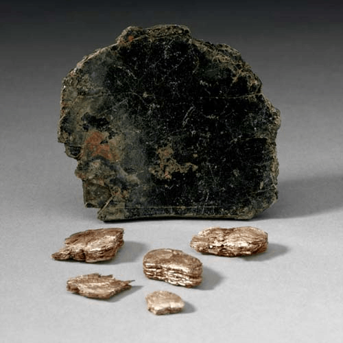

Vermiculite - Mg0.7(Mg,Fe3+,Al)6(Si,Al)8O20(OH)4·8H2O
Phyllosilicates


Habit: Colorless, green, gray white or yellow brown. Tabular pseudo-hexagonal crystals or platy aggregates. Vitreous to dull luster; transparent to opaque. Greenish white streak.
Environment: An alteration product of biotite-group minerals formed by weathering or hydrothermal action. Occurs at the contact between felsic and mafic or ultramafic rocks such as pyroxenites and dunites, in carbonatites and metamorphosed limestones, and as a clayey constituent of soils.
Etymology: From the Latin vermiculare, meaning "to breed worms," in allusion to its peculiar exfoliation on intense heating.